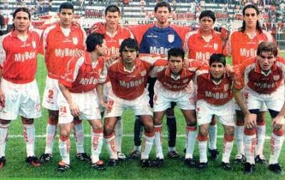

SER HINCHA DE MORÓN - El Libro

Con los campeones del 2017 de la mano del Walter Otta, los hinchas del Gallo
dejamos atrás 17 años de desgracias deportivas. En el año 2000, el Deportivo Morón
descendió a la B Metropolitana, y desde entonces sufrimos con finales perdidas,
pelear por no irnos a la Primera C y ver subir de categorías a todos nuestros rivales
históricos. Así y todo, tenemos muchos motivos para llevar con orgullo nuestra
gloriosa camiseta: las hazañas de Copa Argentina, la vuelta a la B Nacional,
el enorme Damián Akerman, los míticos Estadios Francisco Urbano y un barrio que
lleva nuestro nombre con un escudo rojo y blanco en cada esquina.
Recorramos juntos estos últimos veinte años de historia con más de 800 síntesis
detalladas de todos los partidos oficiales y estadísticas de cada temporada,
planteles, goleadores y tablas de posiciones, sumados a algunas historias de cancha
o de la vida que intentan explicar el motivo, la razón o la locura que nos llevan a
SER HINCHAS DE MORÓN.
Secciones
TORNEOS 2000-2020
Formaciones, estadísticas, goleadores, presencias, tablas de posiciones de todos los torneos que jugó el Gallo desde el 2000 hasta el 2020.
COPA ARGENTINA

Detalle de todos los partidos disputados por el Gallo en la Copa que reúne a los equipos de todas las categorías del país, donde logramos grandes hazañas.
RESUMEN HISTÓRICO

Repaso de los hechos mas sobresalientes de la historia del Club desde sus comienzos en 1947 hasta fines del año 2020.
DAMIÁN AKERMAN

Homenaje al máximo ídolo de nuestra historia, con un detallado resumen de su pasó por Morón y el detalle de todos los goles que hizo con nuestra camiseta.
CUENTOS
Relatos, historias, anécdotas, recuerdos contados en primera persona de vivencias en distintas canchas de un hincha común y corriente.